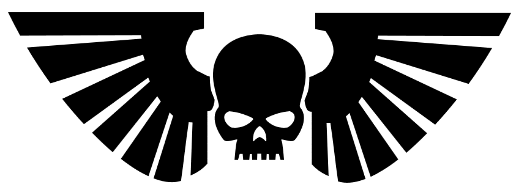

Gwardia Imperialna (ang. Imperial Guard), znana także pod nazwą Astra Militarum, jest największą siłą walczącą w galaktyce Drogi Mlecznej. Złożona z niezliczonych miliardów kobiet i mężczyzn stanowi pierwszą linię obrony ludzkości przed najazdami okrutnych obcych. Ludzie pochodzący ze światów pustynnych, skutych lodem czy zdewastowanych niekończącą się wojną zostają zjednoczeni pod sztandarem Imperium Ludzkości, aby bronić każdego skrawka imperialnej ziemi. Siła Gwardii Imperialnej opiera się głównie na umiejętności strategicznych dowódców, sile ognia oraz na liczebności, mimo że wiele jest przypadków, gdzie wróg góruje liczebnie nad Astra Militarum. Nazywana także Młotem Imperatora Gwardia, jest jakby manifestacją ogromu Imperium - codziennie pod broń zostają powołane niezliczone liczby, każdego dnia giną dziesiątki tysięcy a na ich trupach prowadzą atak kolejne tysiące ludzi wraz z zastępami czołgów mając za plecami ogromne rezerwy dostarczane przez imperialną flotę. Młodzi ludzie, w porównaniu do swych wrogów, słabo przeszkoleni i wyposażeni zostają wysłani w kosmos, by walczyć z najgorszymi okropieństwami wszechświata i dają im radę. Gwardziści zmuszeni są walczyć z najgorszymi potwornościami i plugastwami galaktyki w niekończącej się wojnie o przetrwanie rasy ludzkiej. Gdyby nie poświęcenie Gwardii Imperialnej, Imperium Człowieka nie byłoby w stanie przetrwać 10 tysięcy lat. Historia
Gwardia Imperialna wywodzi się z czasów Wielkiej Krucjaty kiedy Imperator w ogniach wojny tworzył Imperium Człowieka. Na czele jego armii stały Legiony Kosmicznych Marines - najlepszych wojowników jakich kiedykolwiek stworzyła ludzkość. Nie byli oni jednak wystarczająco liczni, aby samodzielnie strzec granic Imperium a zarazem je powiększać. Legiony Kosmicznych Marines zapędzały się coraz dalej, ku granicom galaktyki, odległości dzielące legiony wynosiły niezliczone tysiące lat świetlnych a między nimi nie było nikogo. Zamiast ryzykować utraty terytorium Imperator wydał rozkaz utworzenia Imperialnej Armii.
Imperialna Armia
Nowo utworzona siła była czymś czego nie widziano jeszcze w galaktyce. Sformowana z ludzi zamieszkujących odległe od siebie planety Armia Imperialna była bez wątpienia oszałamiającą zbieraniną ochotników, najemników, poszukiwaczy przygód, idealistów, ocalałych członków armii podbitych planet, ksenofobów i wielu innych. Na początku swojego istnienia nowa siła służyła jedynie jako garnizon światów zdobytych przez Kosmicznych Marines. Utrzymywali spokój, tłumili wszelkie rebelie i bronili planet przed najazdami obcych. Na razie uśpiony potencjał Armii Imperialnej miał niedługo zostać wykorzystany. Patriarchowie razem ze swymi podopiecznymi docierali już do wschodnich granic galaktyki, więc potrzebowali większej ilości ludzi, toteż członkowie armii wkrótce mieli wyruszyć ze swoich planet, aby nigdy już nie wrócić. Garnizony armii zostały podzielone na regimenty liczące 3.000 ludzi, każdemu z nich został przypisany jeden statek lub kilka mniejszych jednostek, aby szybko i bez przeszkód dostarczać ludzi bezpośrednio na wyznaczone im miejsce. Wiele regimentów działało samodzielnie, powszechne było jednak oddawanie regimentów pod władzę Patriarchów, z którymi zwykli ludzie z nieznanych planet walczyli ramie w ramie podczas podbijania kolejnych światów. Taka organizacja sił krucjaty okazała się jednak zgubna po rozpoczęciu Herezji Horusa.

Herb Astra Militarum
Używamy cookies w celach funkcjonalnych, aby ułatwić użytkownikom korzystanie z witryny oraz w celu tworzenia anonimowych statystyk serwisu. Jeżeli nie blokujesz plików cookies, to zgadzasz się na ich używanie oraz zapisanie w pamięci urządzenia. Polityka PrywatnościJak wyłączyć cookies?CyberbezpieczeństwoZGODA